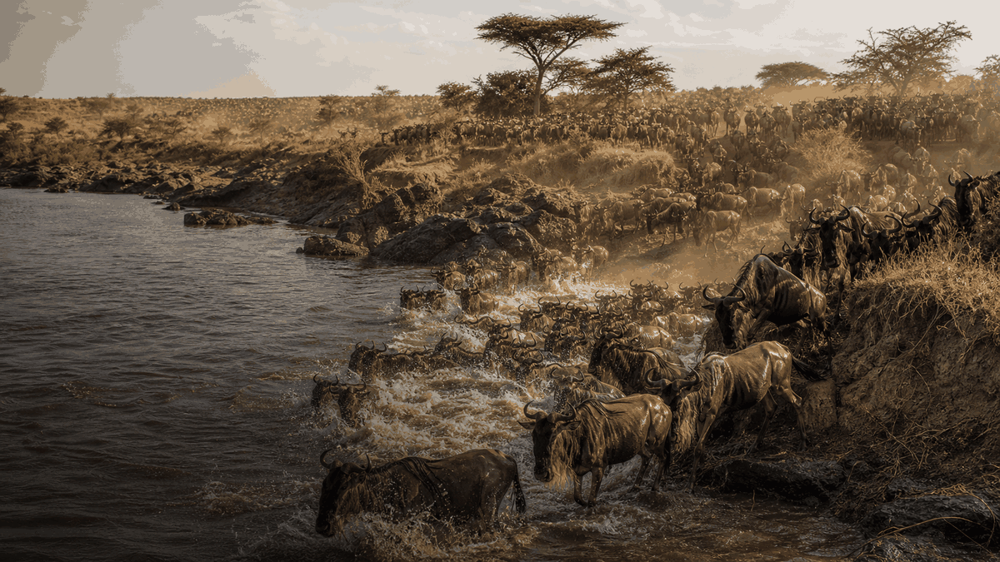
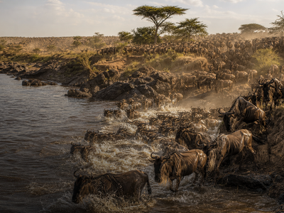

Wildlife event guide
Great Migration
A compact OneSliders guide to Great Migration: what it is, how the current edition works and which moments matter most.

More WildlifeInterested in more Wildlife?Explore related events, places and calendar moments.
Great Migration is tracked as an evergreen event so the general guide stays stable while the year slide changes over time.
The year slide holds dates, place and practical questions in one compact view.
For nature events, the useful top-level view is season, route, habitat pressure and responsible viewing, not results.
- Season timing changes with rainfall and grass conditions.
- Good guides describe where the movement is likely, not a fixed arena.
- Archive notes should capture sightings, conservation context and visitor impact.
| Year | Season focus | Useful archive |
|---|---|---|
| 2026 | Movement window | Herd location notes |
| 2025 | River crossing watch | Weather pattern |
| 2024 | Herd location notes | Viewing conditions |
| 2023 | Weather pattern | Conservation notes |
| 2022 | Viewing conditions | Movement window |
| 2021 | Conservation notes | River crossing watch |
Related context
Edition guide
Great Migration 2026
Choose an edition; only this slide changes.
Dates and programme details should be checked close to the event.
Dates are carried from the current OneSliders event listing.
Host context:  Kenya.
Kenya.
Check the organiser and city transport pages before travel.
Ticket windows and resale rules vary by edition.
Use the route slide for the main natural phases.
This edition is still upcoming.